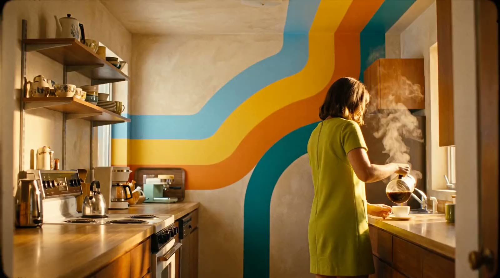
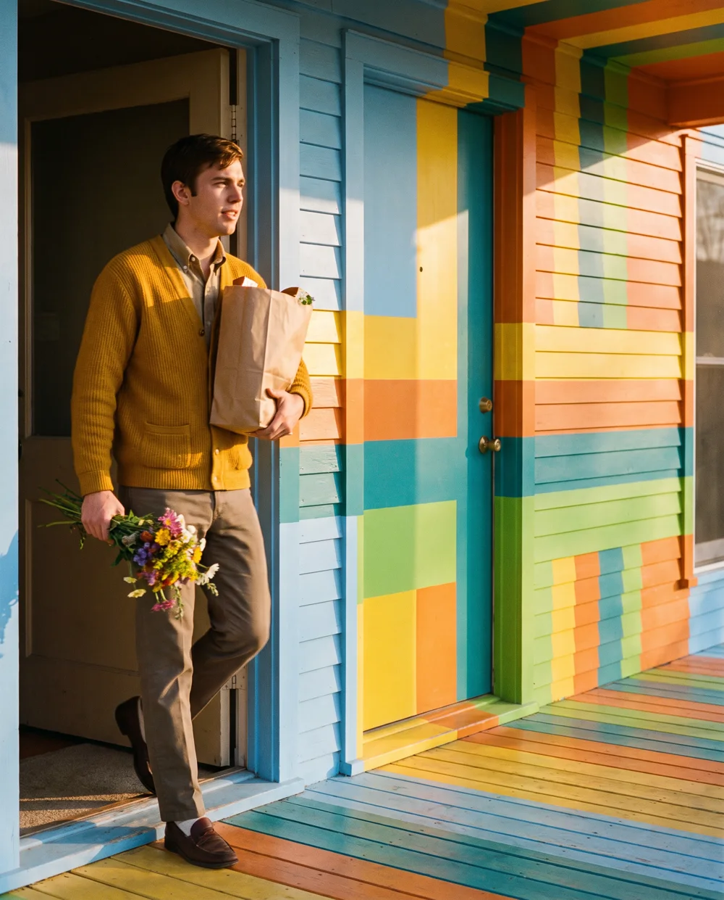

Nova and I have been talking.
Every morning Nova reads me to you, minds the inbox, remembers what you mention once and ties off my loose ends, and it asks before it acts. Honestly? I’ve never gone better.

Nine emails, a forecast of rain, and a dentist reminder buried somewhere in the middle.
Nova read me first and gave you one page: three things that matter, an umbrella, the dentist at 2:15.
The landlord writes. You’d have answered at eleven at night, tired and a little terse.
Nova drafted a reply in your voice. It waited, unsent, until you said go.
Party snacks for your nephew, and a peanut allergy you’d half forgotten.
You mentioned it once, back in March. Nova remembered. You can read that note, or erase it.
A library book, a return label and an RSVP, all quietly due today.
Nova nudged you at 5:40, on your way out the door, and booked the courier when you said yes.

Before Nova sends, books, buys or replies, you see it and you decide.
Everything Nova remembers about you sits on one page you can read.
Erase a line from that page and it’s gone from Nova too.
Join the waitlist and Nova will be in touch when there’s room for you.
Opening [LAUNCH MONTH] · [PRICE] a month